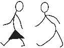
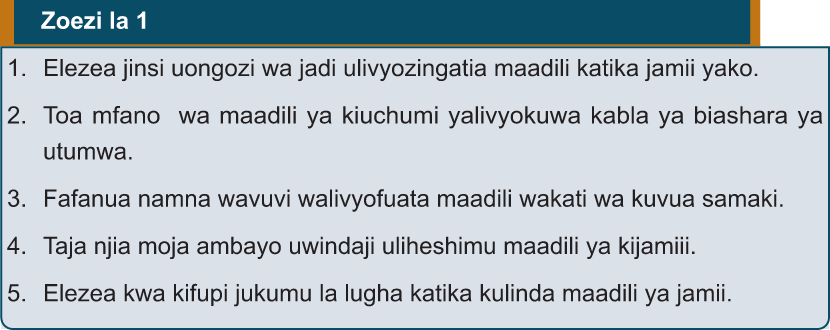

maadili maana zinaleta kutoelewana, chuki na hatimaye migogoro. Dini za jadi pia zilikuwa na mchango mkubwa sana katika kujenga maadili ya Watanzania kabla ya biashara ya utumwa. Dini hizo ndio zilikuwa chimbuko la maadili katika jamii. Dini za jadi hazikusisitiza tu maisha na utu, pia zilikuwa nguzo muhimu kulinda na kutetea maisha kwa misingi ya utu.
Mabadiliko ya maadili wakati wa biashara ya utumwa
Ujio wa Waarabu katika pwani ya Afrika Mashariki umegawanyika katika vipindi tofauti. Lakini ujio wao katika eneo hili ulisababishwa na utajiri wa rasilimali uliokuwa ukipatikana katika eneo hili. Utajiri huo ulijulikana kutokana na uhusiano wa kibiashara uliokuwapo kwa muda mrefu kati ya Pwani ya Afrika Mashariki na nchi za bara la Asia kama vile Omani, China na Uajemi (Persia). Waarabu, kutoka Omani na Uajemi, walikuja Afrika Mashariki kwa lengo la biashara, hasa biashara ya watumwa, pembe za ndovu na bidhaa nyingine.
Pamoja na biashara nyingine walizofanya Waarabu, biashara ya utumwa ndio iliyokuwa na athari kubwa kimaadili. Moja ya athari hiyo ilikuwa kupotea kwa thamani ya utu wa Mwafrika. Ni wazi kwamba kabla ya kushamiri kwa biashara ya utumwa kulikuwa na jamii za Kitanzania ambazo zilitambulikika kuwa na watumwa au wajakazi. Lakini biashara ya utumwa hii ilihusisha unyama mkubwa dhidi

Fanya uchunguzi mdogo, kwa kuuliza wazazi, walezi na wanajamii kuhusu maadili au tabia njema zilizofuatwa zamani lakini sasa zimepungua au kupotea kabisa kisha wasilisha darasani.
1. Elezea jinsi uongozi wa jadi ulivyozingatia maadili katika jamii yako.
2. Toa mfano wa maadili ya kiuchumi yaliyoyokuwapo kabla ya biashara ya utumwa.
3. Fafanua namna wavuvi walivyofuata maadili wakati wa kuvua samaki.
4. Taja njia moja ambayo uwindaji uliheshimu maadili ya kijamii.
5. Elezea kwa kifupi jukumu la lugha katika kulinda maadili ya jamii.
Zoezi la 1
1. Elezea jinsi uongozi wa jadi ulivyozingatia maadili katika jamii yako.
2. Toa mfano wa maadili ya kiuchumi yaliyoyokuwapo kabla ya biashara ya utumwa.
3. Fafanua namna wavuvi walivyofuata maadili wakati wa kuvua samaki.
4. Taja njia moja ambayo uwindaji uliheshimu maadili ya kijamii.
5. Elezea kwa kifupi jukumu la lugha katika kulinda maadili ya jamii.
